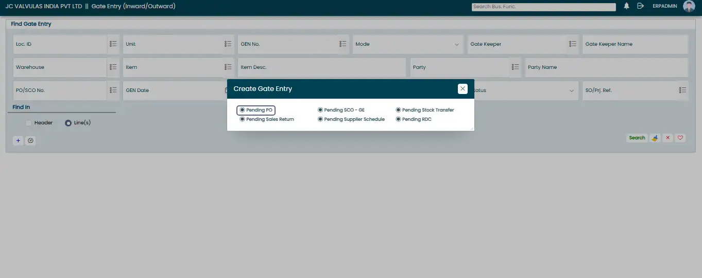
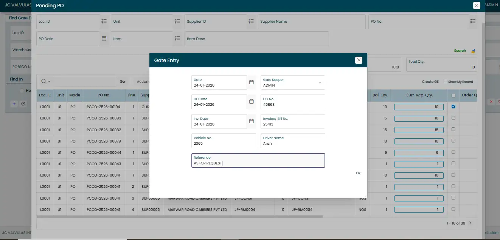
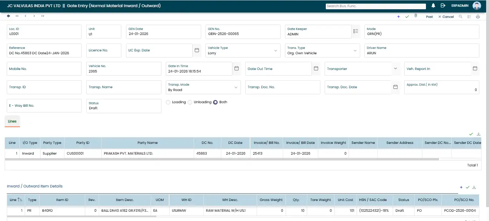

<div data-category="Purchase Order" data-title="Pending Inward (PO)" data-updated="December 01, 2025" data-contributors="RoadmapIT" data-breadcrumb="Home,Purchase Order,Pending Inward (PO)">
  <div class="page-content">
    <p>If the gate entry flag is checked in the application control, the following documents are displayed in the Pending Inward screen corresponding unit in the respective Supplier schedule order or the Purchase Order tabs.</p>

    <h5>Navigation path:</h5>
    <p class="fs-6">Supply Chain /Gate Entry/ Transaction / Gate entry(Inward/Outward)</p>

    

    <ul style="list-style-type: none; align-content: center">
      <li class="mouse-icon">Search screen displays the list of Inward documents with the relevant details and its status.</li>
      <li class="mouse-icon">Click on search to filter all the records.</li>
      <li class="mouse-icon">User can filter the respective documents by entering the search parameters at the header.</li>
      <li class="mouse-icon">Using search, system displays the results relevant to the search parameters entered.</li>
      <li class="mouse-icon">On -click; the corresponding transaction record will be displayed.</li>
      <li class="mouse-icon">Using <i class="bi bi-eraser text-secondary"></i> icon, entered search parameters can be cleared.</li>
      <li class="mouse-icon">To close the screen, use <i class="bi bi-x-lg text-danger"></i> icon.</li>
      <li class="mouse-icon">
        By Clicking the
        <i class="bi bi-plus fs-4 mx-2 text-primary"></i>
        Add button we can create new Gate entry inward by entering all the mandatory fields displayed in the Add dialog.
      </li>
      <li class="mouse-icon">
        Click on
        <i class="bi bi-clock-history text-primary"></i>
        button and Select Pending PO, Page navigates into Pending PO.
      </li>
    </ul>

    

    <ul style="list-style-type: none; align-content: center">
      <li class="mouse-icon">Select the PO Document and Click create Gate entry.</li>
      <li class="mouse-icon">Enter the Gate entry Date.</li>
      <li class="mouse-icon">Choose date and Gate keeper field.</li>
      <li class="mouse-icon">Enter vehicle No Details.</li>
      <li class="mouse-icon">Enter DC no and Inv no details.</li>
      <li class="mouse-icon">Give Reference and Driver Name details.</li>
      <li class="mouse-icon">Click OK button.</li>
      <li class="mouse-icon">Gate entry Document will be created.</li>
    </ul>

    

    <ul style="list-style-type: none; align-content: center">
      <li class="mouse-icon">The approved supplier schedule orders are displayed in the Pending supplier schedule tab if the gate entry flag is enabled for the corresponding unit in the application control.</li>
      <li class="mouse-icon">Click Pending Supplier Schedule Order and Page navigate into Pending SSO.</li>
      <li class="mouse-icon">Select the document and Create Gate entry.</li>
      <li class="mouse-icon">Gate entry Document Created and Document Navigate into Transaction Screen.</li>
    </ul>
  </div>
</div>
